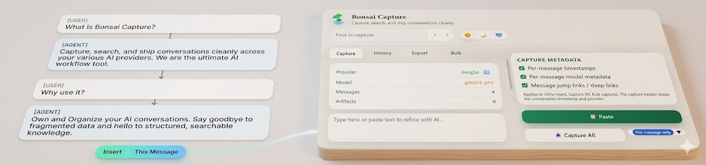
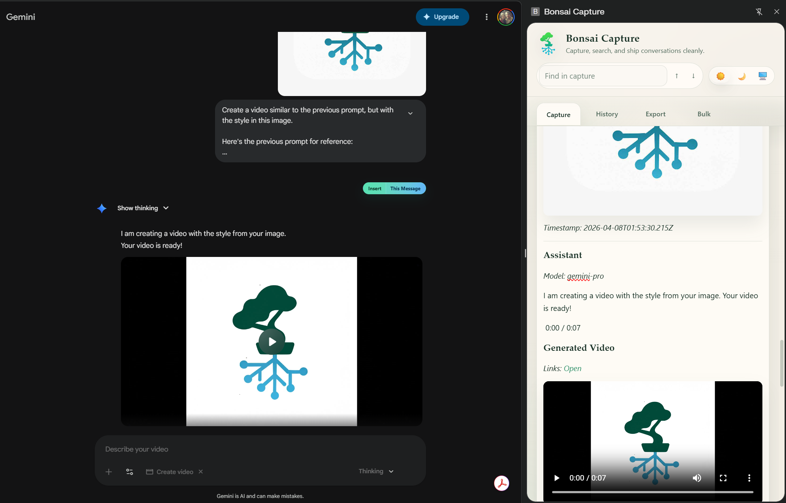
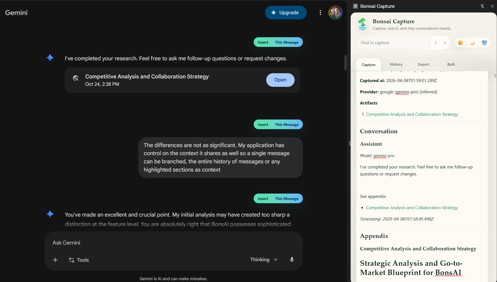
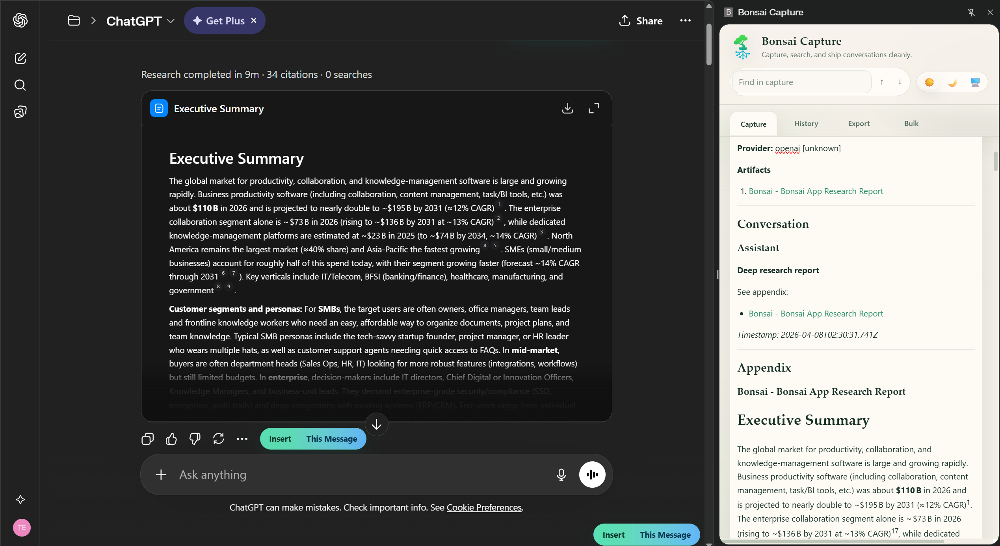
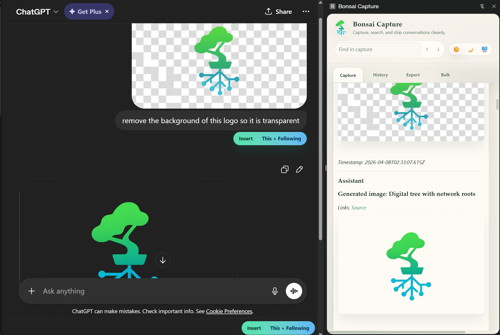
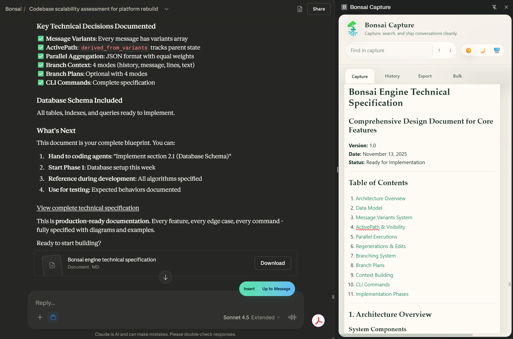
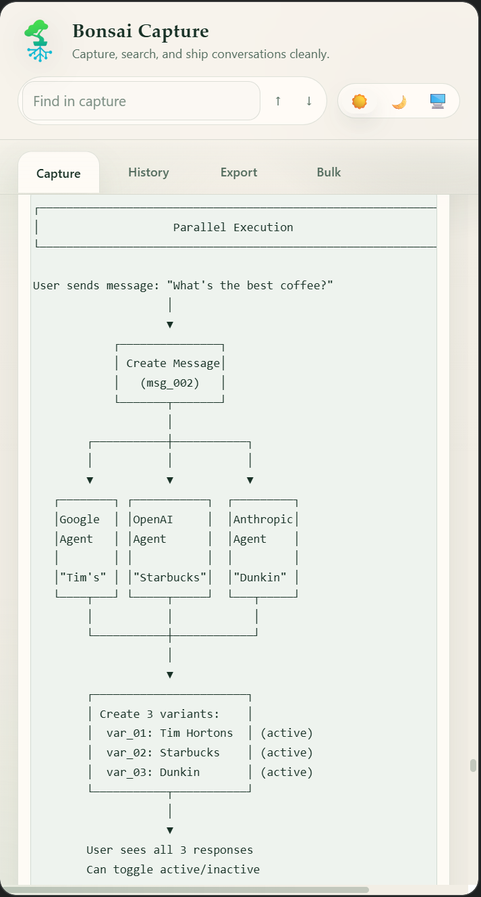

Your AI conversations are valuable. Keep them local.
Bonsai Capture is a Chrome extension that turns temporary AI chats — and their artifacts — into permanent, structured notes you own.
No store listing yet. Download the prebuilt alpha, unzip it, and load the extracted folder in Chrome or Brave. No npm or bun required.

The problem Bonsai Capture solves.
Every day, you have useful conversations with ChatGPT, Claude, Gemini, and Grok. Bonsai Capture captures those sessions — including code artifacts, Canvas content, Deep Research reports, and images — and exports them as structured Markdown, JSON, or TOON files that live in your own workflow.
Proprietary Lock-in
The current state of AI chats
What the alpha actually does.
Capture, structure, and export conversations from supported AI chat providers.
Multi-provider capture
Capture conversations from ChatGPT, Claude, Gemini, and Grok with one consistent extension flow.
Artifact capture
Code artifacts, HTML previews, Claude Canvas, ChatGPT Deep Research reports, and generated images are captured alongside the conversation.
Structured exports
Export Markdown, JSON, or TOON with YAML frontmatter, code blocks, and inline images preserved. Fully local — no cloud required.
Provenance included
Each capture keeps timestamps, provider metadata, model data, and source links for traceability.
Real captures from the app.
These are real outputs from Bonsai Capture, not mockups. Show the extension preserving provider-specific artifacts, dates, follow-on context, and rich code formatting together with the conversation.

Gemini
Video and image artifact capture
Gemini visuals and video output are captured together with the chat in one searchable record.

Gemini
Deep Research capture
Documentation and appendix content are preserved as clean, structured artifacts.

ChatGPT
Deep Research report capture
Summary, citations, and appendix are preserved as a structured artifact instead of a fragile screenshot.

ChatGPT
Image capture with follow-on context
The prompt, image, and follow-on context are captured in one continuous workflow.

Claude
Document capture with date provenance
Document artifacts are captured with explicit timestamps and provenance metadata.

Code
Rich code block capture
Code blocks are preserved with formatting, spacing, and structure ready for export.
What you actually get.
We don't just dump text or screenshots. We craft structured data, preserve artifacts, and keep the formatting your future self will appreciate.
- check_circle Automatic YAML metadata tags
- check_circle Syntax-highlighted code blocks
- check_circle Reference IDs for easy linking
--- title: AI in Climate Science 2026 provider: gemini model: Gemini 2.0 Flash date: 2026-04-07 artifact_type: deep_research --- # Deep Research Overview Gemini synthesized 14 primary sources across 4 research domains. ## Artifact 48-page report with citations and metadata preserved as structured data.
Background Sync (Pro)
Never press export again. Our upcoming background daemon monitors your active sessions and pushes new messages to your local vault in real-time. Zero friction. Total coverage.
Install the prebuilt alpha
Skip the local build. Download the packaged alpha, extract it, and load it directly into Chrome or Brave.
Download the alpha ZIP
Grab the prebuilt package from this site. It already includes the compiled extension.
download Download latest alphaExtract the folder
Unzip the download. You should end up with a bonsai-capture-alpha folder containing manifest.json.
Load unpacked
Open chrome://extensions, enable Developer mode, and select the extracted bonsai-capture-alpha folder.
Chrome load unpacked guide open_in_newCapture and export
Use the side panel to capture chats and artifacts, then export to Markdown, JSON, or TOON.
Need a pinned build or changelog? View GitHub Releases.